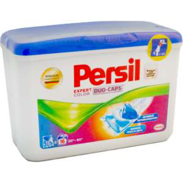

Чи думали ви коли-небудь про те, якими властивостями володіє той порошок, яким ви користуєтеся? І про те, які кошти найбільш ефективно перуть одяг? Нижче ви знайдете рекомендації про те, як правильно вибирати пральний порошок для прання в автоматі, вручну, а також які засоби підходять для дитячих речей.
Ефективність обробки тканини за допомогою прального порошку визначається пропорцією речовин, що містяться в складі. Причому важливий не тільки відсоток вмісту того чи іншого компонента, але також і, в цілому, якість сировини, яка використовується на виробництві.
